La goleada del Universidad de Chile , flamante campeón de la temporada pasada , destacó en la segunda jornada del torneo de apertura del fútbol chileno al vencer al O`Higgins de Rancagua , por 4-0.
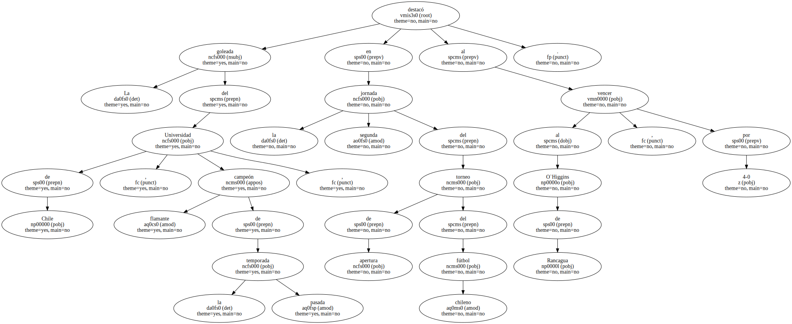El cuadro universitario , que el pasado miércoles goleó también al Atlético Nacional de Colombia , por 4-0 , en partido válido por el Grupo 4 de la Copa Libertadores de América , esta vez repitió la cifra aunque ahora los autores de los tantos fueron los jugadores suplentes.
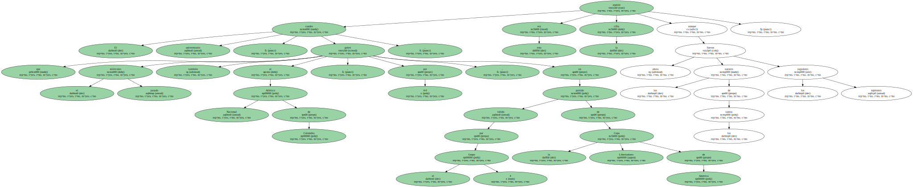Los titulares del Universidad de Chile instalados en las gradas del estadio " El Teniente " de Rancagua , vieron como los goles de Marcos González ( a los 3 minutos ) ; del argentino Diego Rivarola ( m.36 ) , de Sebastián Pardo ( m.53 ) , y Edson Monsalve ( m.78 ) , dieron cuenta fácil del dueño de casa , que en la primera fecha había sufrido otra derrota frente al Unión Española , por 5-2.
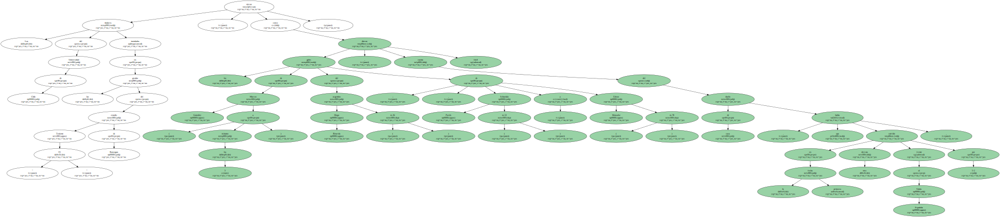Este es el primer triunfo del conjunto universitario que dirige el técnico César Vaccia en el torneo de apertura del fútbol chileno , ya que en la primera fecha empató 0-0 con Deportes Concepción.
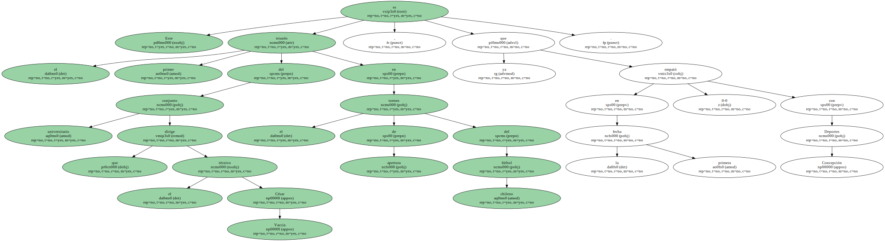El llamado " Campeonato de Apertura " - que sólo consta de cuatro fechas - definirá un puesto en la liguilla que a finales de este año determinará una plaza en la Copa Libertadores de la próxima temporada.
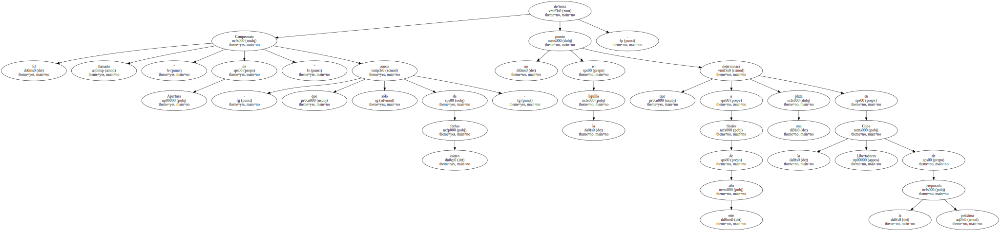Otra de las goleadas de esta segunda fecha del fútbol chileno la consiguió el Colo Colo , que encajó al Puerto Montt 5-2.

Con dos goles del internacional José Luis Sierra , a los 30 y 46 minutos , y de Sebastián González , Carlos Reyes y Alonso Zúñiga , a los 20 , 63 y 77 minutos , respectivamente , los jugadores del uruguayo Fernando Morena , lograron un contundente triunfo que hace tiempo reclamaban sus hinchas.
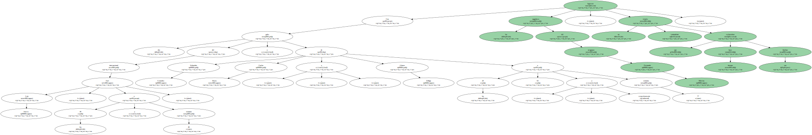Los tantos del Puerto Montt lo consiguieron Juan Quiroga y Rodrigo Viligrón , a los 69 y 91 minutos , respectivamente , de este encuentro que se disputó en el estadio Monumental David Arellano.
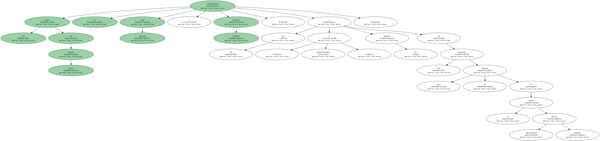El recién ascendido Everton de Viña del Mar , en tanto , logró el segundo triunfo consecutivo al derrotar a Palestino por 1-0 , con gol de Raúl Duarte a los 47 minutos.
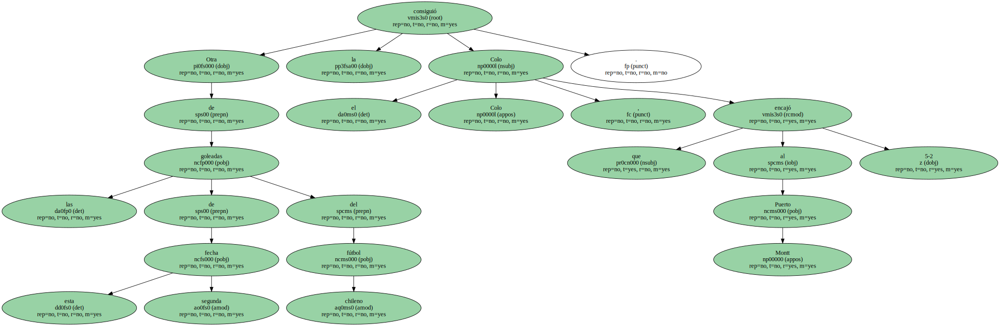El conjunto que dirige Jorge Aravena ratificó en su feudo , ante unas 6.000 personas , el buen comienzo que tuvo en este torneo de apertura cuando hace una semana viajó a Calama , a 1.584 kilómetros al norte de Santiago , donde le encajó 2-1 al Cobreloa , uno de los equipos poderosos de este torneo.
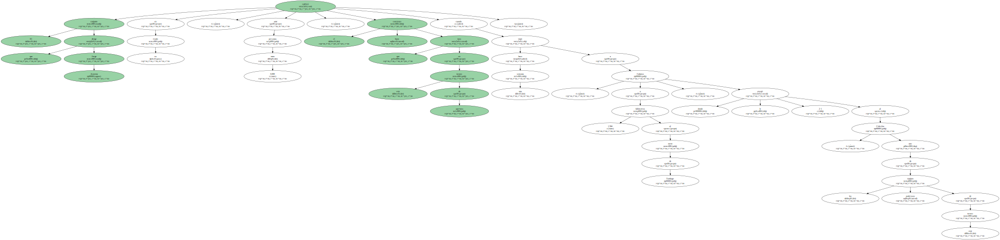El Universidad Católica , por su parte , venció al Audax Italiano por 3-2 , con goles marcados por Rodolfo Moya ( 17` ) ; Francisco Fernández ( 19` ) y Mario Núñez ( 60` ).
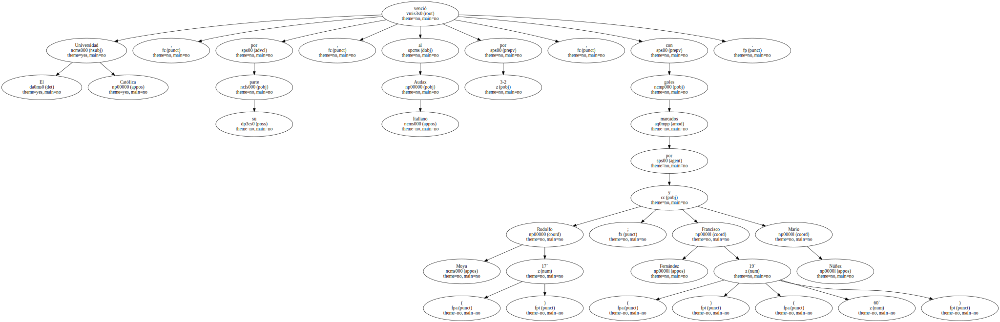Descontaron para el equipo perdedor Marcos Olea , a los 46 minutos y Héctor Salazar , a los 91 minutos.
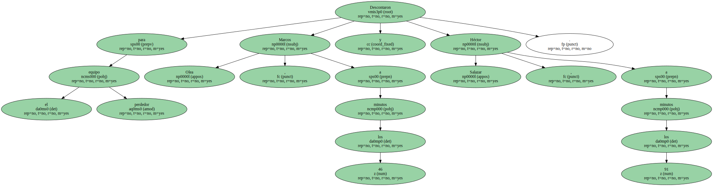Esta vez , el conjunto católico que dirige el holandés Wim Rijssberden , supo controlar muy bien las acciones en el medio campo lo que permitió que sus delanteros llegaran con mayor efectividad a la portería itálica.
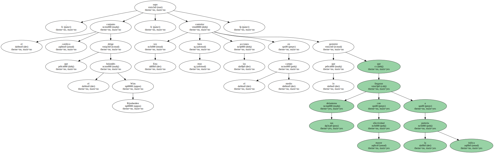A 942 kilómetros al sur de Santiago , el Osorno se desquitó este fin de semana de la derrota que le infligió el Puerto Montt ( 1-0 ) en la primera rueda del torneo de apertura , al vencer al Huachipato , por 2-0.
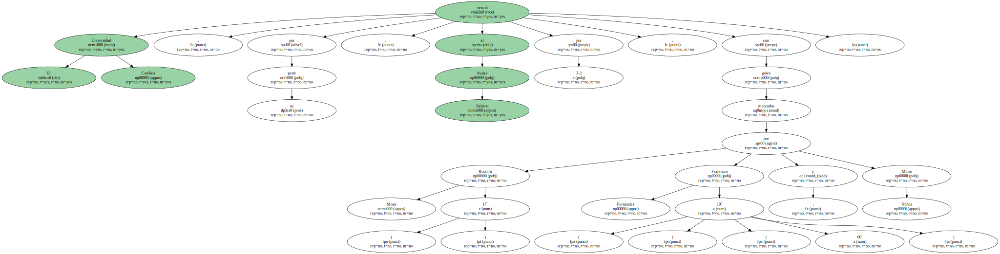Los goles fueron marcados por Luis Díaz y por Rubén Dundo , a los 51 y 81 minutos , respectivamente.
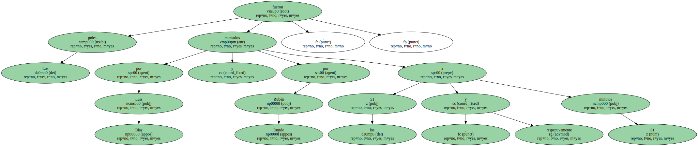El segundo gol fue mediante tiro penal.
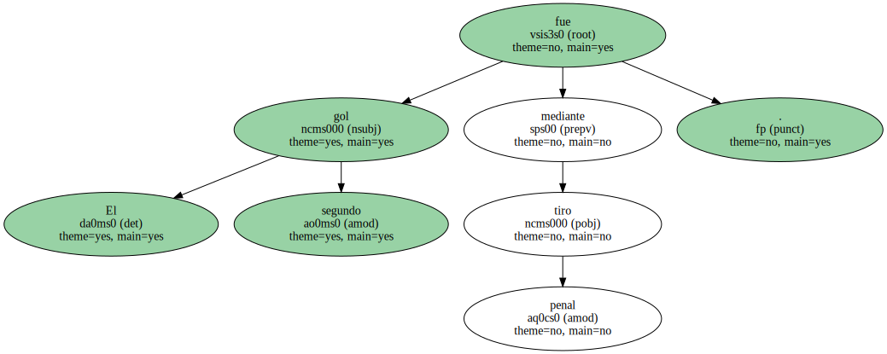El Santiago Morning , equipo que venía de perder frente al Universidad Católica ( 0-1 ) , esta vez dejó más contento a sus seguidores al lograr vencer al Wanderers de Valparaíso por un gol a cero , en un partido de muy poca calidad técnica.
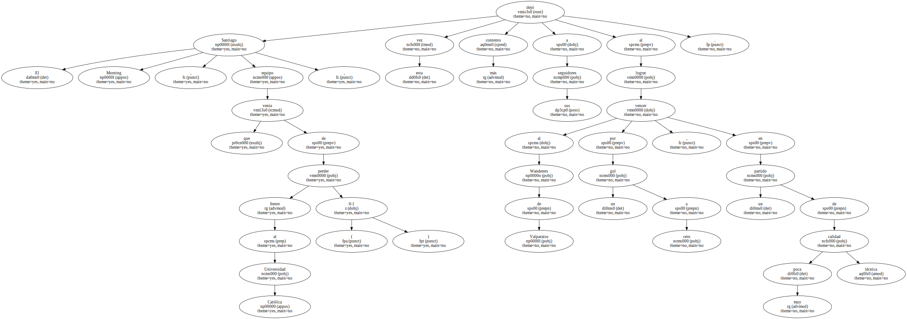El Unión Española , en tanto , que el fin de semana pasado ofreció la primera sorpresa del torneo de apertura al golear por 5-2 al O`Higgins de Rancagua , logró sacar este fin de semana un empate dramático ( 2-2 ) frente al Deportes Concepción.
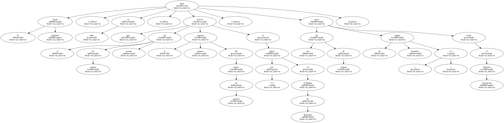Aparentemente , el viaje a la ciudad de Concepción , a 515 kilómetros al sur de Santiago , mermó la condición física de los " diablos rojos " de Independencia , como se le conoce al equipo español.
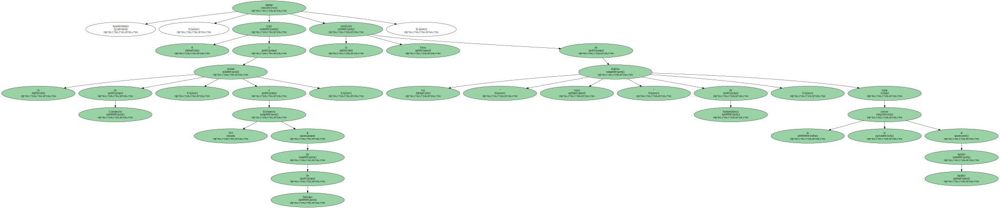En todo caso , los cuatro goles que se encajaron en los 90 minutos de juego , bajo una intensa lluvia , fueron un buen premio para los casi 2.000 espectadores que se atrevieron a asistir al estadio.
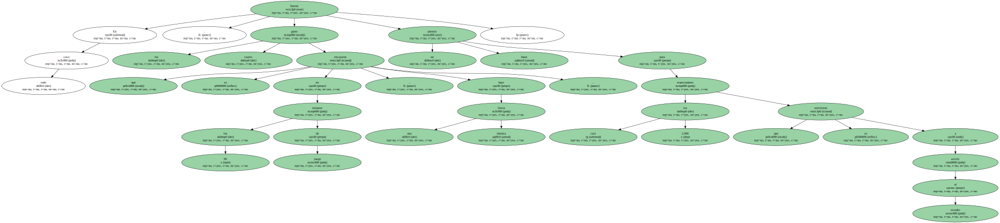Los goles de Deportes Concepción fueron convertidos por Luis Chavarría ( 43` ) , y Mario Vargas ( 70` ) , mientras que para el equipo visitante descontó José Luis Díaz ( 13` ) , de lanzamiento penal y Julio Gutiérrez ( 94` ).
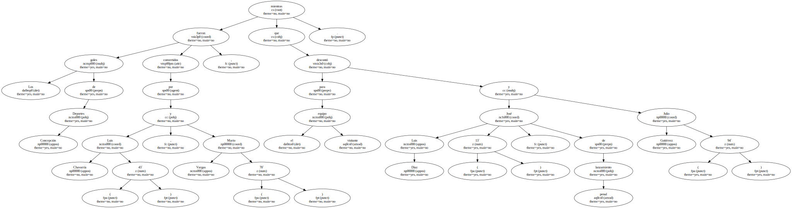